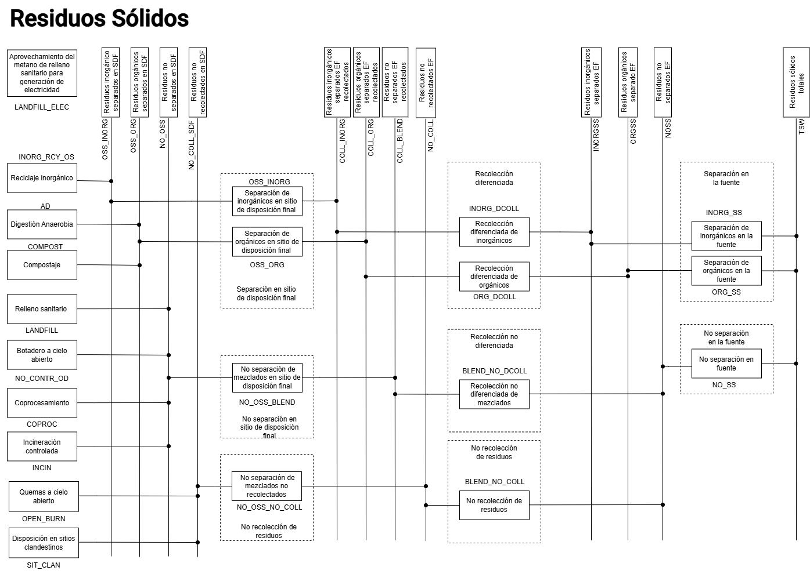
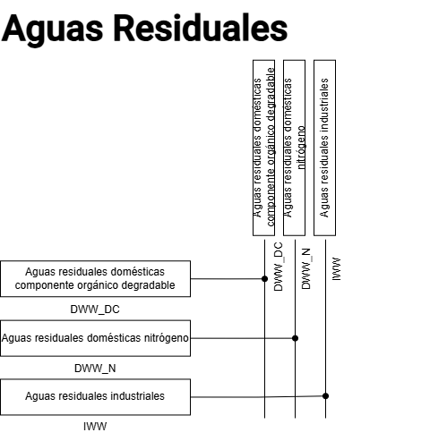

6.1. Estructura del modelo
Otro de los sectores de mitigación estudiados por el IPCC es el sector Residuos. Este sector produce emisiones por varias prácticas de disposición y tratamiento de residuos sólidos y aguas residuales generadas en el país. En cuanto a GEI, en el sector se genera principalmente metano (CH4) y óxido nitroso (N2O) por la descomposición de materia orgánica, además de CO2 por la incineración de residuos sólidos, aportando a la liberación bruta de emisiones de CO2e en el Ecuador. Las categorías y subcategorías que conforman este sector se enlistan a continuación:
- 5A: Disposición de residuos sólidos
5A1: Sitios de disposición de residuos sólidos gestionados
5A2: Sitios de disposición de residuos sólidos no gestionados
- 5B: Tratamiento biológico de residuos sólidos
5B1: Compostaje
- 5C: Incineración y quema abierta de residuos
5C1: Incineración de residuos
- 5D: Eliminación y tratamiento de aguas residuales
5D1: Aguas residuales domésticas
5D2: Aguas residuales industriales
Basado en lo anterior, se construye un modelo en la herramienta OSeMOSYS para poder representar la actividad y las emisiones anuales de las categorías y subcategorías del sector, así como para facilitar la construcción de varios escenarios basado en iniciativas de disposición adecuada, reducción y tratamiento de residuos sólidos y aguas residuales. De forma simplificada, el modelo que simula el comportamiento del sector residuos sólidos se ilustra en la Figura 6. Por su parte el modelo que representa las aguas residuales se muestra en la Figura 7.
{kind=link}

Figura 6. Diagrama de referencia del modelo del sector Residuos Sólidos.
{kind=link}

Figura 7. Diagrama de referencia del modelo del sector Aguas Residuales.
En las Tablas 15, 16 y 17 se incluye la nomenclatura de los sets Technologies, Commodities y Emission del modelo de las Figura 6 y 7.
Descripción |
Código |
|---|---|
Reciclaje de residuos inorgánicos separados en sitio de disposición final |
INORG_RCY_OS |
Digestión anaerobia |
AD |
Compostaje |
COMPOST |
Relleno sanitario |
LANDFILL |
Botadero a cielo abierto |
NO_CONTR_OD |
Coprocesamiento |
COPROC |
Incineración controlada |
INCIN |
Quema a cielo abierto |
OPEN_BURN |
Disposición en sitios clandestinos |
SIT_CLAN |
Aprovechamiento del metano de rellenosanitario para generación de electricidad |
LANDFILL_ELEC |
Aguas residuales domésticas componente (orgánico degradable) |
DWW_DC |
Aguas residuales domésticas (nitrógeno) |
DWW_N |
Aguas residuales industriales |
IWW |
Separación de residuos inorgánicos en sitio de disposición final |
OSS_INORG |
Separación de residuos orgánicos en sitio de disposición final |
OSS_ORG |
No separación de residuos mezclados en sitio de disposición final |
NO_OSS_BLEND |
No recolección de residuos sólidos en sitio de disposición final |
NO_OSS_NO_COLL |
Recolección diferenciada de residuos inorgánicos |
INORG_DCOLL |
Recolección diferenciada de residuos orgánicos |
ORG_DCOLL |
Recolección no diferenciada de residuos mezclados |
BLEND_NO_DCOLL |
No recolección de residuos sólidos |
BLEND_NO_COLL |
Separación de residuos inorgánicos en la fuente |
INORG_SS |
Separación de residuos orgánicos en la fuente |
ORG_SS |
No separación de residuos en la fuente |
NO_SS |
Generación total de residuos sólidos |
T5TSWTSW |
Recuperación de metano a partir de residuos sólidos en relleno sanitario para generación de electricidad |
T5LANDFILL_ELECTSW |
Demanda - Aguas residuales domésticas componente (orgánico degradable) |
T5DWW_DCWW |
Demanda - Aguas residuales domésticas (nitrógeno) |
T5DWW_NWW |
Demanda - Aguas residuales industriales |
T5IWWWW |
PTAR Emission reductions |
PTAR_ER |
Descripción |
Código |
|---|---|
Residuos inorgánicos separados en el sitio de disposición final |
OSS_INORG |
Residuos orgánicos separados en el sitio de disposición final |
OSS_ORG |
Residuos no separados en el sitio de disposición final |
NO_OSS |
Residuos en sitios de disposición final clandestinos no recolectados |
NO_COLL_SDF |
Aprovechamiento del metano de relleno sanitario para generación de electricidad |
LANDFILL_ELEC |
Aguas residuales domésticas componente (orgánico degradable) |
DWW_DC |
Aguas residuales domésticas (nitrógeno) |
DWW_N |
Aguas residuales industriales |
IWW |
Residuos inorgánicos recolectados |
COLL_INORG |
Residuos orgánicos recolectados |
COLL_ORG |
Residuos mezclados recolectados |
COLL_BLEND |
Residuos mezclados no recolectados |
NO_COLL |
Residuos inorgánicos separados en la fuente |
INORGSS |
Residuos orgánicos separados en la fuente |
ORGSS |
Residuos no separados en la fuente |
NOSS |
Residuos sólidos totales |
TSW |
Demanda - Residuos sólidos totales |
E5TSWTSW |
Demanda - Aprovechamiento del metano de rellenosanitario para generación de electricidad |
E5TSWLANDFILL_ELEC |
Demanda - Aguas residuales domésticas componente (orgánico degradable) |
E5WWDWW_DC |
Demanda - Aguas residuales domésticas (nitrógeno) |
E5WWDWW_N |
Demanda - Aguas residuales industriales |
E5WWIWW |
Descripción |
Código |
|---|---|
Óxido nitroso producido por el sector residuos |
N2O_WASTE |
Metano producido por el sector residuos |
CH4_WASTE |
Dióxido de carbono producido por el sector residuos |
CO2_WASTE |
Dióxido de carbono equivalente producido por el sector residuos |
CO2e_WASTE |